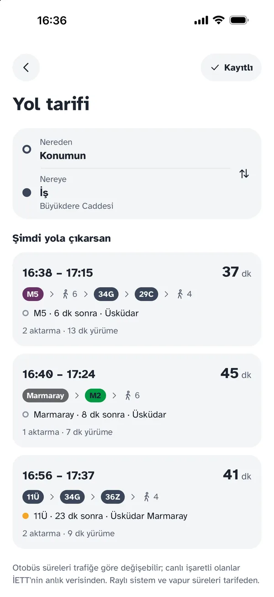
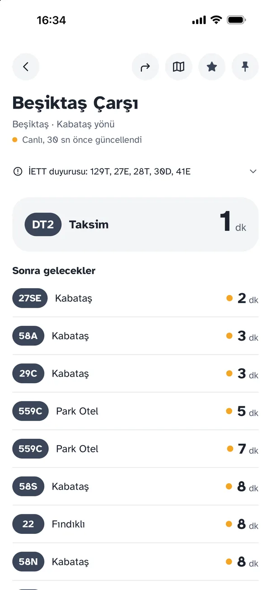
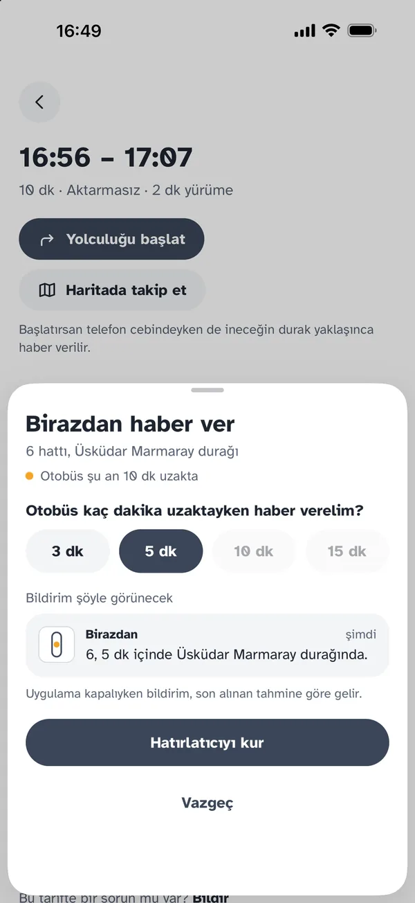
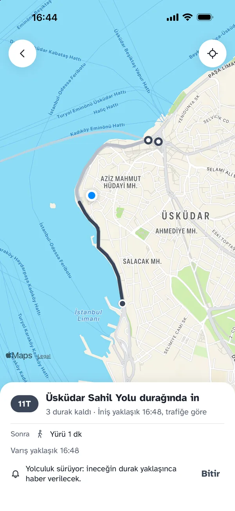
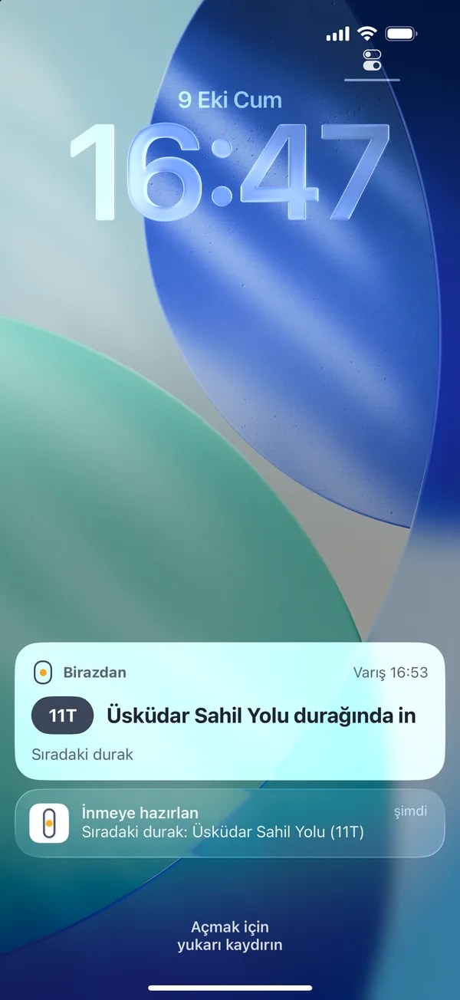

Sıradaki sefer kaç dakika sonra?
Otobüs, metrobüs, metro, tramvay, Marmaray ve vapur. Durakta, istasyonda ya da iskelede beklerken birkaç saniyede öğren.
App Store'dan indir Android yakında
Üsküdar Marmaray
Otobüs · Harem yönü
Süreler yükleniyor…
Uygulamanın gösterdiği süreler: otobüste İETT'nin anlık verisinden, raylı sistem ve vapurda tarifeden. 20 saniyede bir yenilenir.
Kapıdan çıkmadan inene kadar
-
Nereye gideceğini sor
Otobüs, metrobüs, metro, tramvay, Marmaray ve vapurla; otobüs süreleri trafiğe göre. Gideceğin yeri durak, cadde, semt ya da adres yazarak bul.

-
Durakta süreyi gör
Sıradaki otobüs ve sonra gelecekler, kaç dakika kaldığıyla. Her satırda sürenin canlı konumdan mı, tarifeden mi geldiği yazar.

-
Birazdan haber ver
Otobüsün gelmesine 3, 5, 10 ya da 15 dakika kala bildirim al. Süre kilit ekranında geri sayar; durakta beklemen gerekmez.

-
Yolculuğu başlat
Hangi durakta ineceğin ve kaç durak kaldığı hep ekranda. Konum yalnızca yolculuk sürerken kullanılır.

-
İneceğin durak geliyor
Telefon cebindeyken de: sıradaki durak inmen gereken durak olunca haber verilir.

Süre nereden geliyor?
Birazdan bir sürenin neye dayandığını gizlemez; dakikanın yanındaki işaret söyler.
-
Canlı Süre, otobüsün canlı konumundan hesaplandı.
-
Tarifeden Canlı konum yok; süre sefer saatinden tahmin edildi. Metro, Marmaray ve vapur süreleri tarifeden gelir.
Hesap yok, reklam yok, izleme yok
Kaydettiğin yerler ve favorilerin yalnızca telefonunda kalır. Konumun yakındaki durakları bulmak için yuvarlanarak gönderilir ve kaydedilmez. Ayrıntılar gizlilik politikasında.
App Store'dan indir Şimdilik İstanbul'da